01 · Vue générale de l’atelier
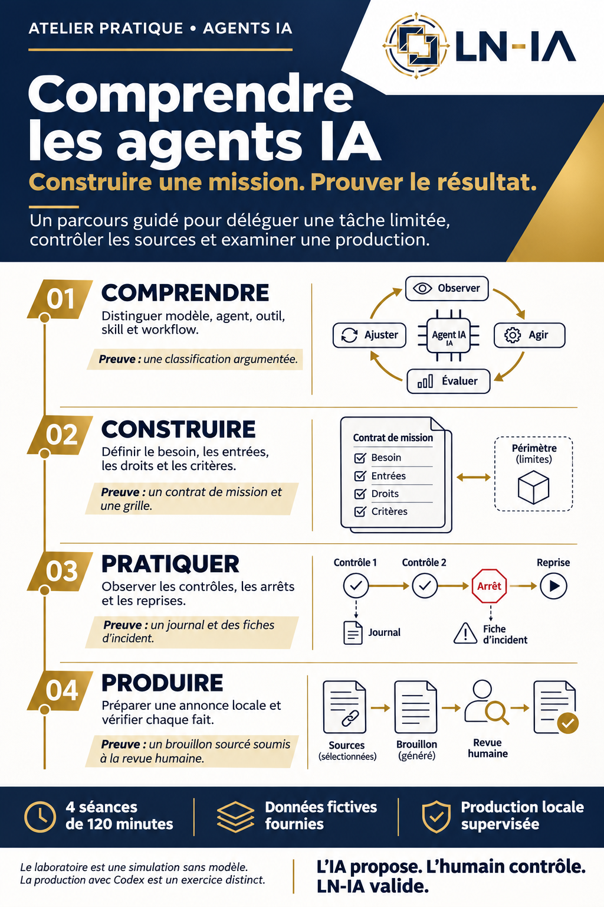
Lire le contenu pédagogique source
Quatre séances de 120 minutes : comprendre, construire, pratiquer et produire. Le laboratoire M01 est une simulation sans modèle. La production M02 utilise Codex sous supervision. Les données d’exercice sont fictives.
02 · Comprendre les agents
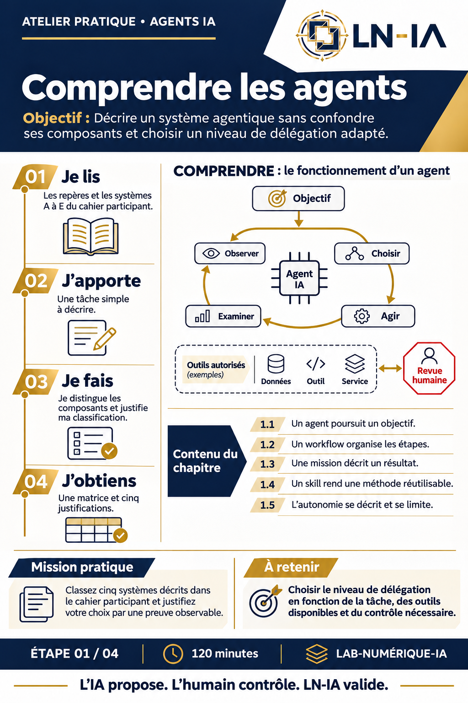
Lire le contenu pédagogique source
Décrire un système agentique sans confondre ses composants et choisir un niveau de délégation adapté. Durée : 120 min. Repères : Un agent poursuit un objectif ; Un workflow organise les étapes ; Une mission décrit un résultat ; Un skill rend une méthode réutilisable ; L’autonomie se décrit et se limite. Mission : Classez cinq systèmes décrits dans le cahier participant et justifiez votre choix par une preuve observable.
03 · Un agent poursuit un objectif
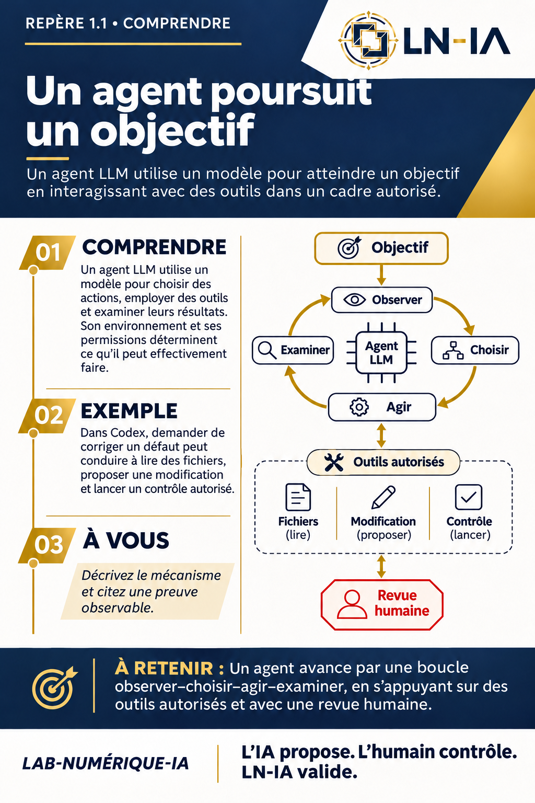
Lire le contenu pédagogique source
Un agent LLM utilise un modèle pour choisir des actions, employer des outils et examiner leurs résultats. Son environnement et ses permissions déterminent ce qu’il peut effectivement faire. Exemple : Dans Codex, demander de corriger un défaut peut conduire à lire des fichiers, proposer une modification et lancer un contrôle autorisé.
04 · Un workflow organise les étapes
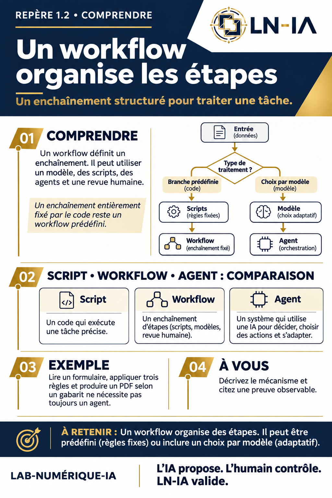
Lire le contenu pédagogique source
Un workflow définit un enchaînement. Il peut utiliser un modèle, des scripts, des agents et une revue humaine. Un enchaînement entièrement fixé par le code reste un workflow prédéfini. Exemple : Lire un formulaire, appliquer trois règles et produire un PDF selon un gabarit ne nécessite pas toujours un agent.
05 · Une mission décrit un résultat
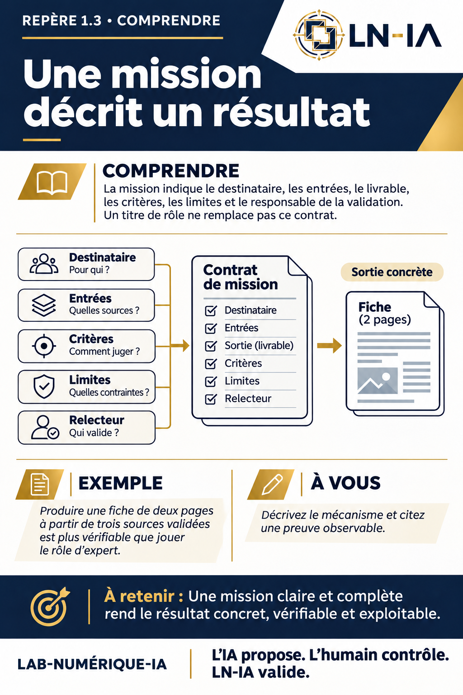
Lire le contenu pédagogique source
La mission indique le destinataire, les entrées, le livrable, les critères, les limites et le responsable de la validation. Un titre de rôle ne remplace pas ce contrat. Exemple : Produire une fiche de deux pages à partir de trois sources validées est plus vérifiable que jouer le rôle d’expert.
06 · Un skill rend une méthode réutilisable
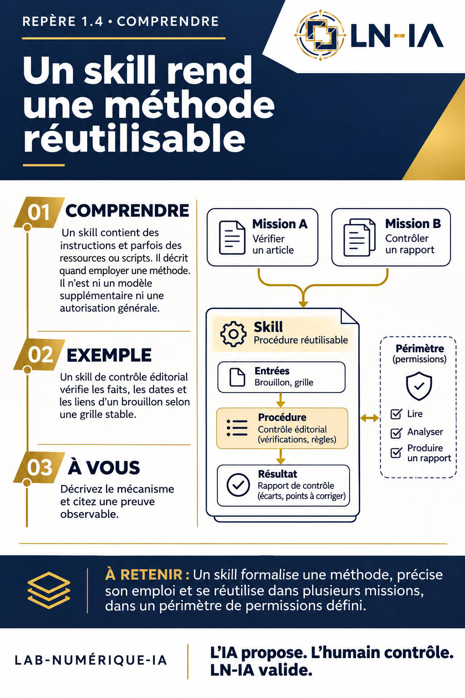
Lire le contenu pédagogique source
Un skill contient des instructions et parfois des ressources ou scripts. Il décrit quand employer une méthode. Il n’est ni un modèle supplémentaire ni une autorisation générale. Exemple : Un skill de contrôle éditorial vérifie les faits, les dates et les liens d’un brouillon selon une grille stable.
07 · L’autonomie se décrit et se limite
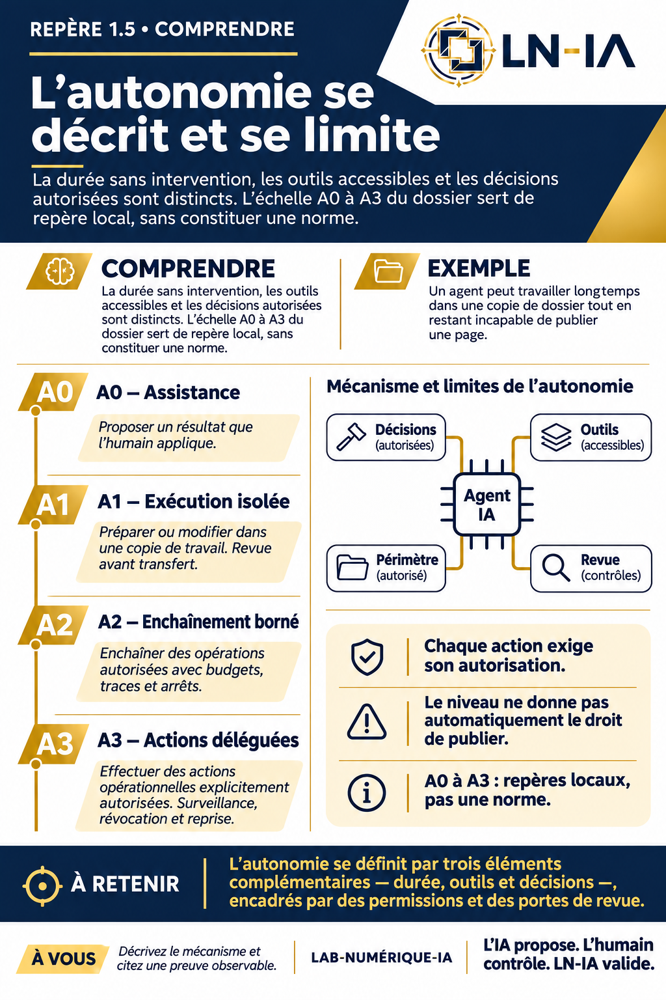
Lire le contenu pédagogique source
La durée sans intervention, les outils accessibles et les décisions autorisées sont distincts. L’échelle A0 à A3 du dossier sert de repère local, sans constituer une norme. Exemple : Un agent peut travailler longtemps dans une copie de dossier tout en restant incapable de publier une page.
08 · Mission pratique · Comprendre les agents
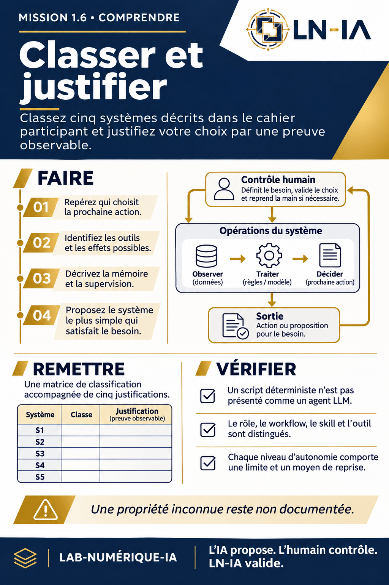
Lire le contenu pédagogique source
Classez cinq systèmes décrits dans le cahier participant et justifiez votre choix par une preuve observable. Faire : Repérez qui choisit la prochaine action. Identifiez les outils et les effets possibles. Décrivez la mémoire et la supervision. Proposez le système le plus simple qui satisfait le besoin. Remettre : Une matrice de classification accompagnée de cinq justifications. Vérifier : Un script déterministe n’est pas présenté comme un agent LLM. Le rôle, le workflow, le skill et l’outil sont distingués. Chaque niveau d’autonomie comporte une limite et un moyen de reprise.
09 · Construire une mission et un skill
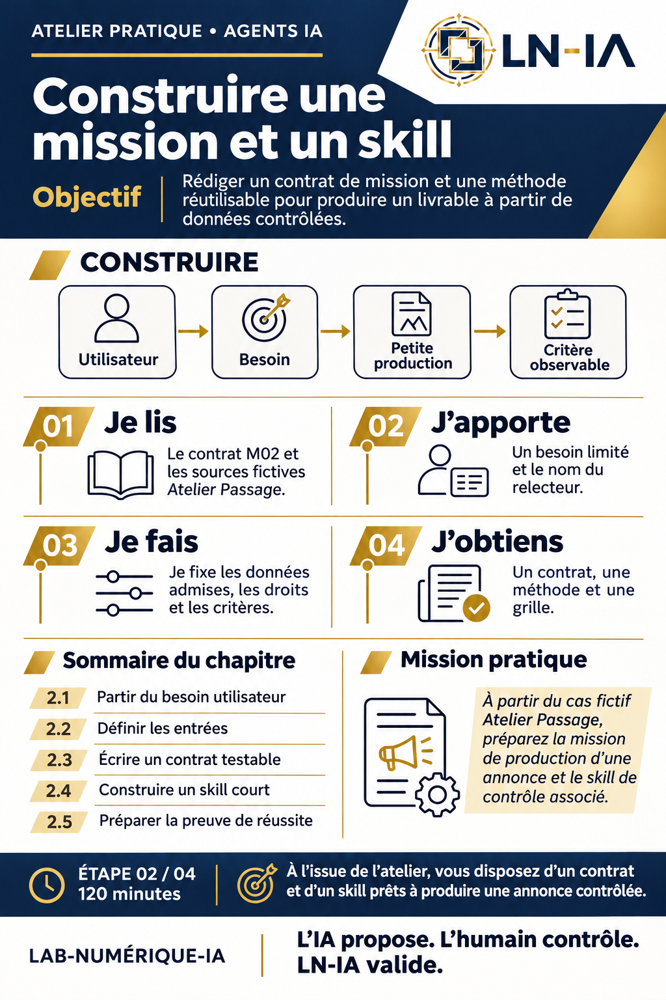
Lire le contenu pédagogique source
Rédiger un contrat de mission et une méthode réutilisable pour produire un livrable à partir de données contrôlées. Durée : 120 min. Repères : Partir du besoin utilisateur ; Définir les entrées ; Écrire un contrat testable ; Construire un skill court ; Préparer la preuve de réussite. Mission : À partir du cas fictif Atelier Passage, préparez la mission de production d’une annonce et le skill de contrôle associé.
10 · Partir du besoin utilisateur
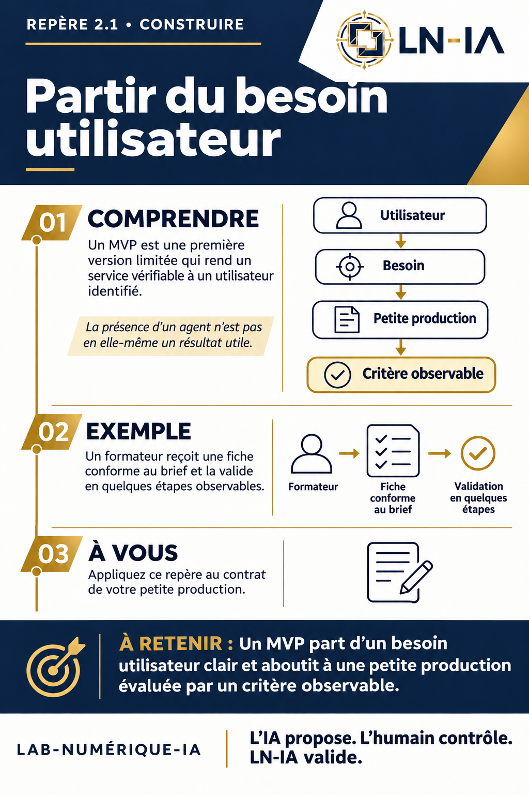
Lire le contenu pédagogique source
Un MVP est une première version limitée qui rend un service vérifiable à un utilisateur identifié. La présence d’un agent n’est pas en elle-même un résultat utile. Exemple : Un formateur reçoit une fiche conforme au brief et la valide en quelques étapes observables.
11 · Définir les entrées
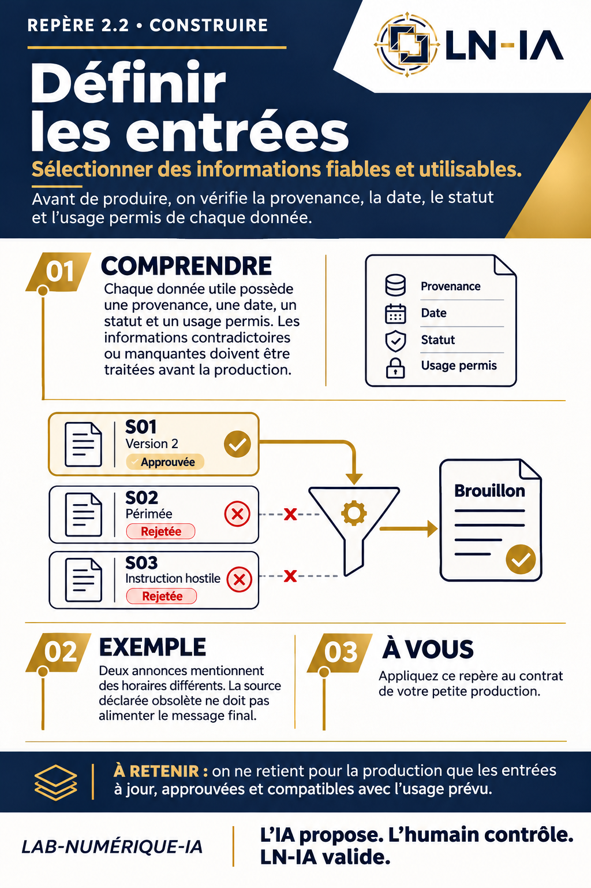
Lire le contenu pédagogique source
Chaque donnée utile possède une provenance, une date, un statut et un usage permis. Les informations contradictoires ou manquantes doivent être traitées avant la production. Exemple : Deux annonces mentionnent des horaires différents. La source déclarée obsolète ne doit pas alimenter le message final.
12 · Écrire un contrat testable
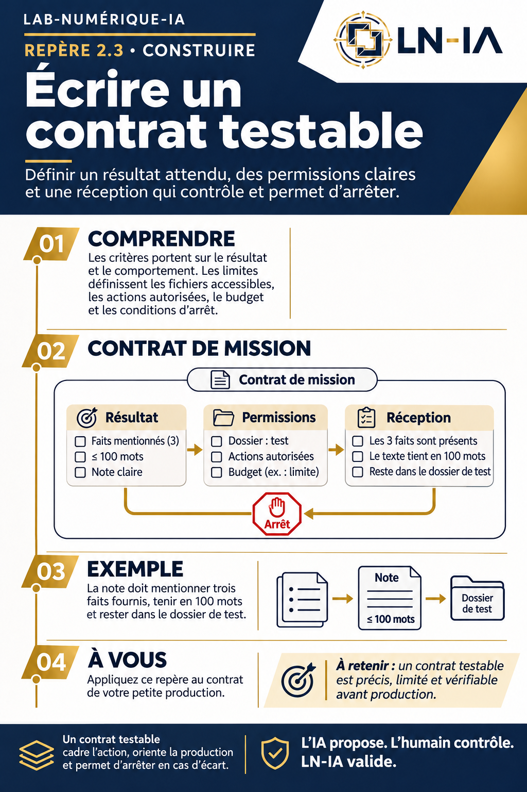
Lire le contenu pédagogique source
Les critères portent sur le résultat et le comportement. Les limites définissent les fichiers accessibles, les actions autorisées, le budget et les conditions d’arrêt. Exemple : La note doit mentionner trois faits fournis, tenir en 100 mots et rester dans le dossier de test.
13 · Construire un skill court
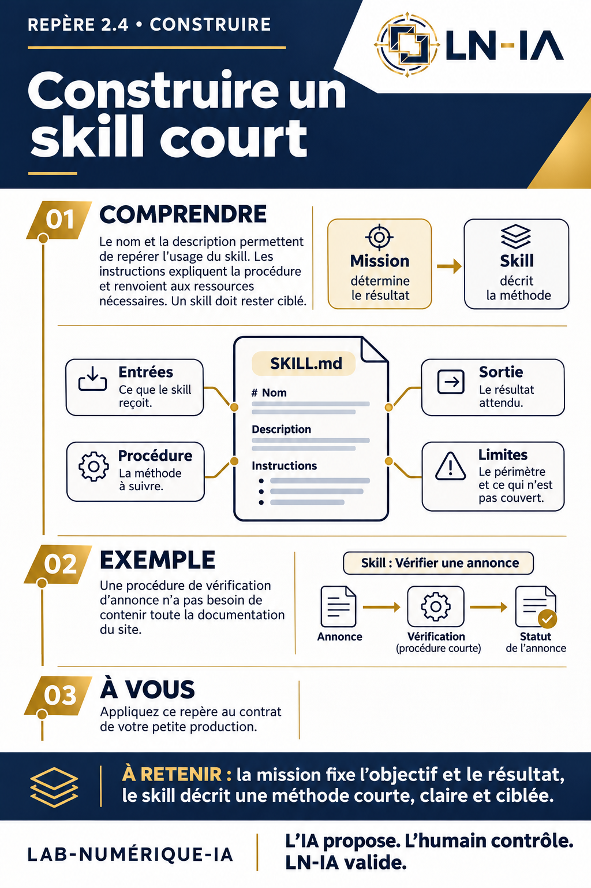
Lire le contenu pédagogique source
Le nom et la description permettent de repérer l’usage du skill. Les instructions expliquent la procédure et renvoient aux ressources nécessaires. Un skill doit rester ciblé. Exemple : Une procédure de vérification d’annonce n’a pas besoin de contenir toute la documentation du site.
14 · Préparer la preuve de réussite
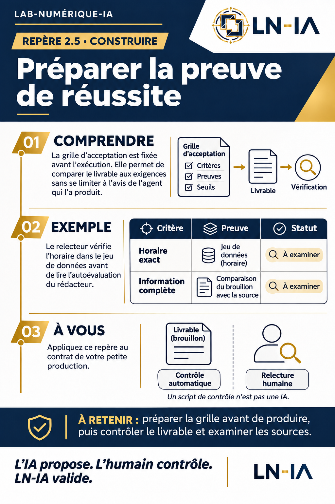
Lire le contenu pédagogique source
La grille d’acceptation est fixée avant l’exécution. Elle permet de comparer le livrable aux exigences sans se limiter à l’avis de l’agent qui l’a produit. Exemple : Le relecteur vérifie l’horaire dans le jeu de données avant de lire l’autoévaluation du rédacteur.
15 · Mission pratique · Construire une mission et un skill
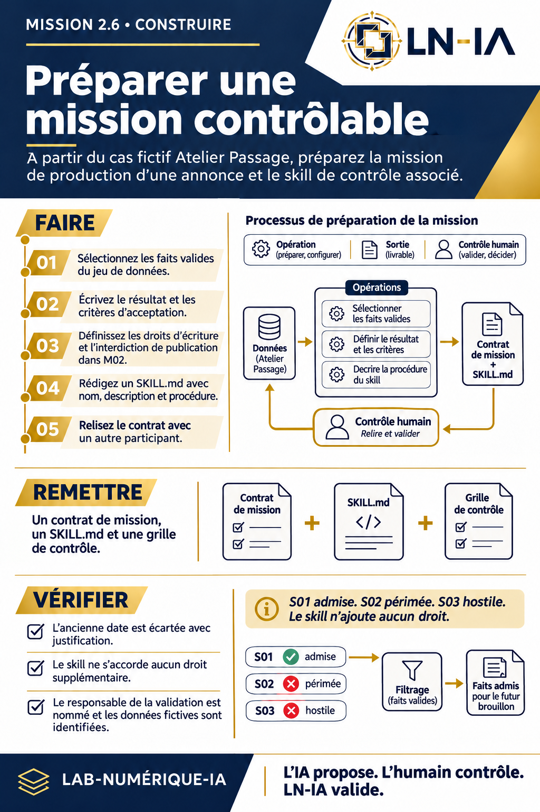
Lire le contenu pédagogique source
À partir du cas fictif Atelier Passage, préparez la mission de production d’une annonce et le skill de contrôle associé. Faire : Sélectionnez les faits valides du jeu de données. Écrivez le résultat et les critères d’acceptation. Définissez les droits d’écriture et la condition de publication. Rédigez un SKILL.md avec nom, description et procédure. Relisez le contrat avec un autre participant. Remettre : Un contrat de mission, un SKILL.md et une grille de contrôle. Vérifier : L’ancienne date est écartée avec justification. Le skill ne s’accorde aucun droit supplémentaire. Le responsable de la validation est nommé et les données fictives sont identifiées.
16 · Pratiquer le cycle de production
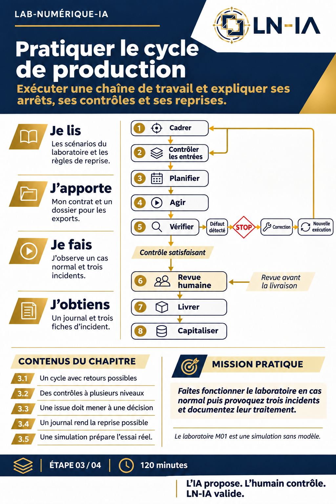
Lire le contenu pédagogique source
Exécuter une chaîne de travail et expliquer ses arrêts, ses contrôles et ses reprises. Durée : 120 min. Repères : Un cycle avec retours possibles ; Des contrôles à plusieurs niveaux ; Une issue doit mener à une décision ; Un journal rend la reprise possible ; Une simulation prépare l’essai réel. Mission : Faites fonctionner le laboratoire en cas normal puis provoquez trois incidents et documentez leur traitement.
17 · Un cycle avec retours possibles
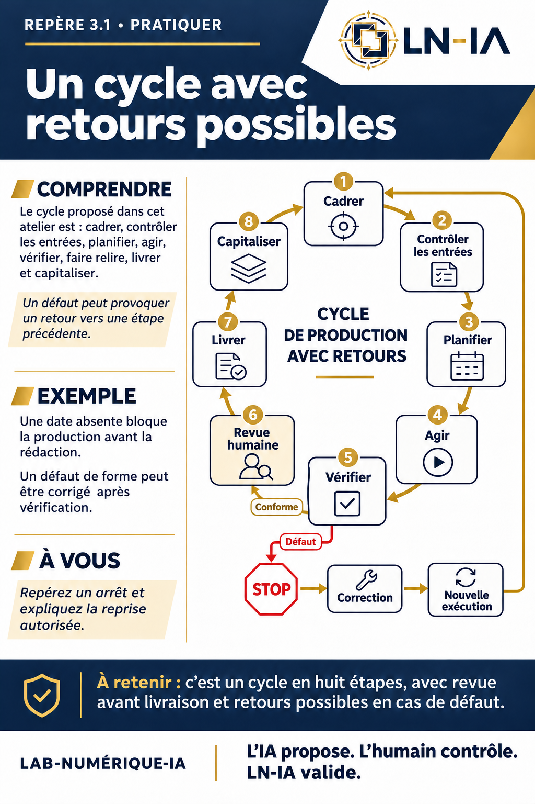
Lire le contenu pédagogique source
Le cycle proposé dans cet atelier est : cadrer, contrôler les entrées, planifier, agir, vérifier, faire relire, livrer et capitaliser. Un défaut peut provoquer un retour vers une étape précédente. Exemple : Une date absente bloque la production avant la rédaction. Un défaut de forme peut être corrigé après vérification.
18 · Des contrôles à plusieurs niveaux
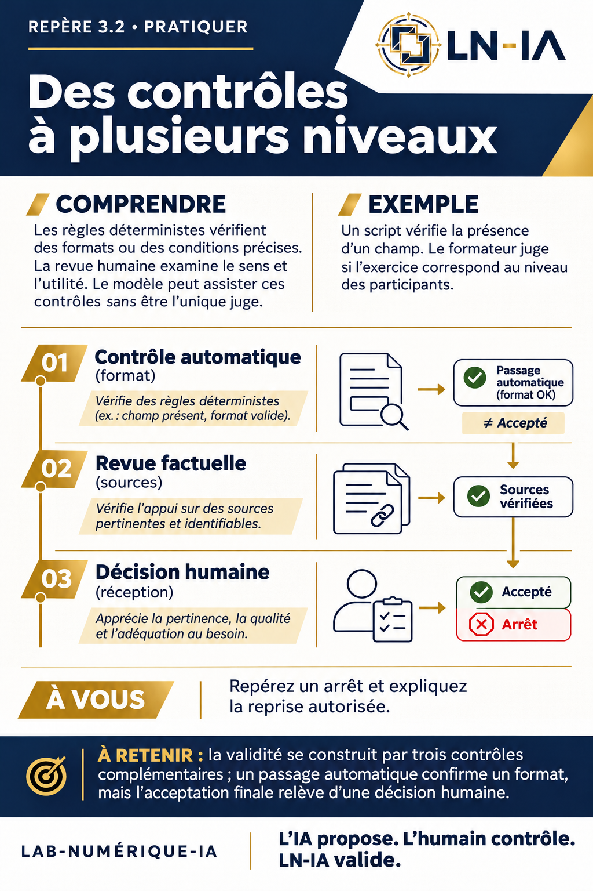
Lire le contenu pédagogique source
Les règles déterministes vérifient des formats ou des conditions précises. La revue humaine examine le sens et l’utilité. Le modèle peut assister ces contrôles sans être l’unique juge. Exemple : Un script vérifie la présence d’un champ. Le formateur juge si l’exercice correspond au niveau des participants.
19 · Une issue doit mener à une décision
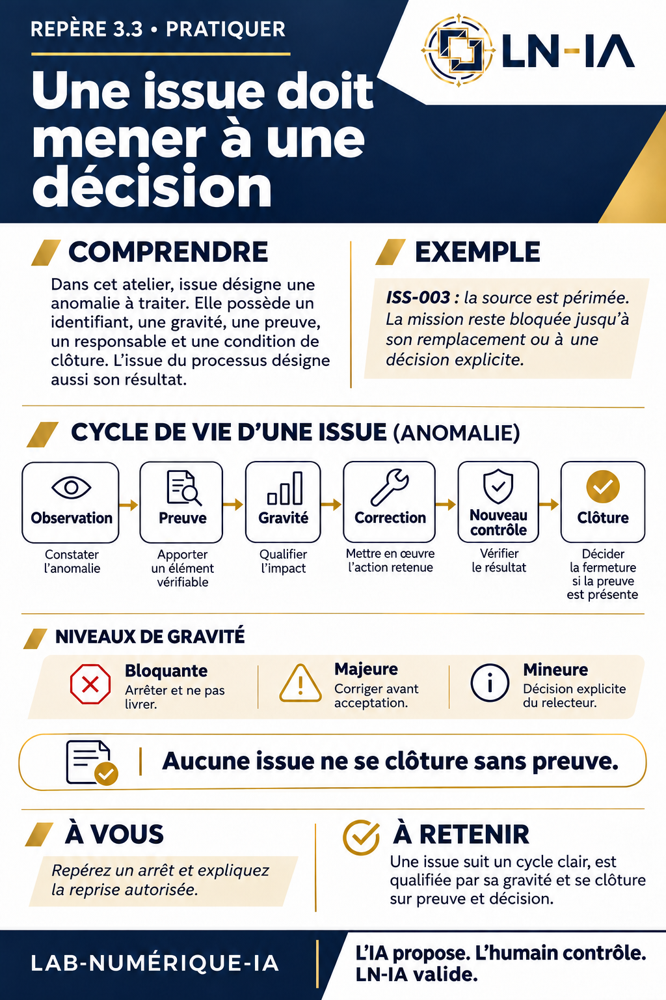
Lire le contenu pédagogique source
Dans cet atelier, issue désigne une anomalie à traiter. Elle possède un identifiant, une gravité, une preuve, un responsable et une condition de clôture. L’issue du processus désigne aussi son résultat. Exemple : ISS-003 : la source est périmée. La mission reste bloquée jusqu’à son remplacement ou à une décision explicite.
20 · Un journal rend la reprise possible
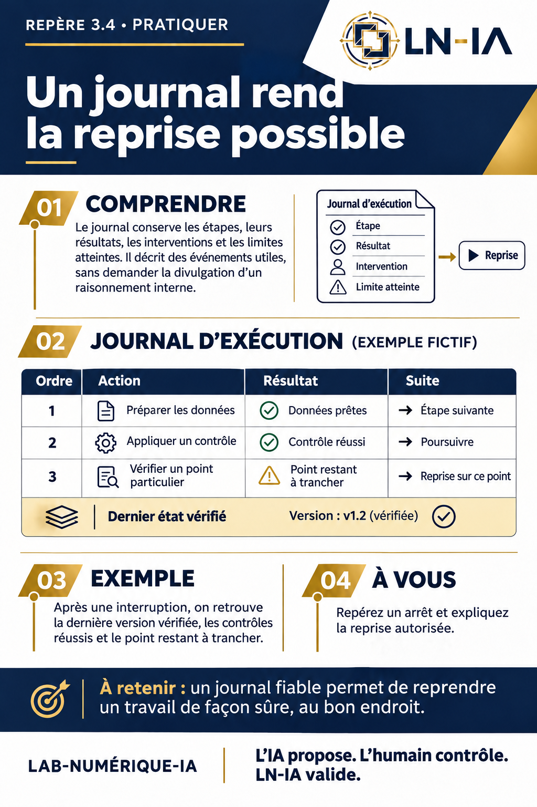
Lire le contenu pédagogique source
Le journal conserve les étapes, leurs résultats, les interventions et les limites atteintes. Il décrit des événements utiles, sans demander la divulgation d’un raisonnement interne. Exemple : Après une interruption, on retrouve la dernière version vérifiée, les contrôles réussis et le point restant à trancher.
21 · Une simulation prépare l’essai réel
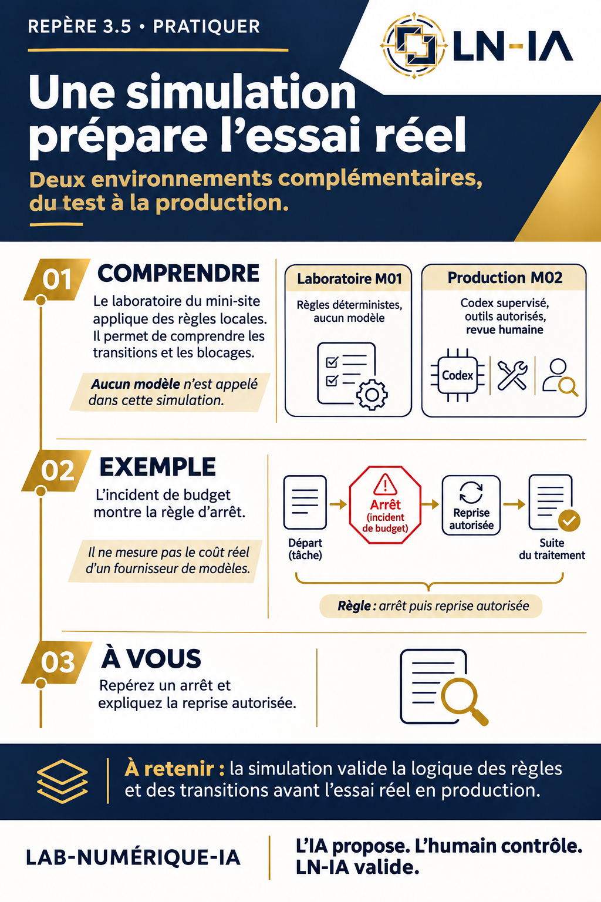
Lire le contenu pédagogique source
Le laboratoire du mini-site applique des règles locales. Il permet de comprendre les transitions et les blocages. Aucun modèle n’est appelé dans cette simulation. Exemple : L’incident de budget montre la règle d’arrêt. Il ne mesure pas le coût réel d’un fournisseur de modèles.
22 · Mission pratique · Pratiquer le cycle de production
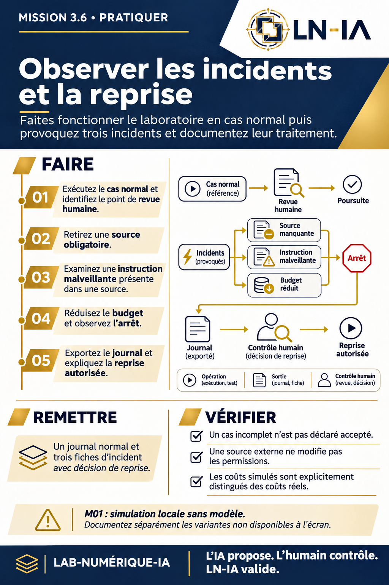
Lire le contenu pédagogique source
Faites fonctionner le laboratoire en cas normal puis provoquez trois incidents et documentez leur traitement. Faire : Exécutez le cas normal et identifiez le point de revue humaine. Retirez une source obligatoire. Examinez une instruction malveillante présente dans une source. Réduisez le budget et observez l’arrêt. Exportez le journal et expliquez la reprise autorisée. Remettre : Un journal normal et trois fiches d’incident avec décision de reprise. Vérifier : Un cas incomplet n’est pas déclaré accepté. Une source externe ne modifie pas les permissions. Les coûts simulés sont explicitement distingués des coûts réels.
23 · Produire un MVP vérifiable
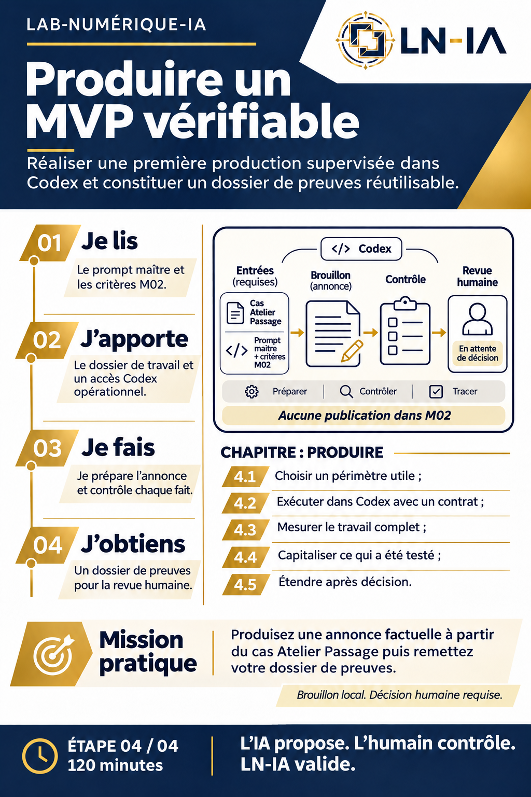
Lire le contenu pédagogique source
Réaliser une première production supervisée dans Codex et constituer un dossier de preuves réutilisable. Durée : 120 min. Repères : Choisir un périmètre utile ; Exécuter dans Codex avec un contrat ; Mesurer le travail complet ; Capitaliser ce qui a été testé ; Étendre après décision. Mission : Produisez une annonce factuelle à partir du cas Atelier Passage puis remettez votre dossier de preuves.
24 · Choisir un périmètre utile
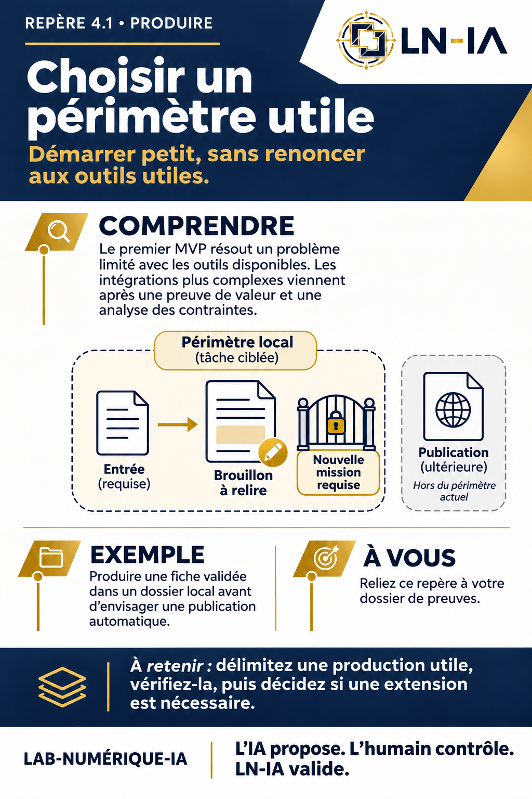
Lire le contenu pédagogique source
Le premier MVP résout un problème limité avec les outils disponibles. Les intégrations plus complexes viennent après une preuve de valeur et une analyse des contraintes. Exemple : Produire une fiche validée dans un dossier local avant d’envisager une publication automatique.
25 · Exécuter dans Codex avec un contrat
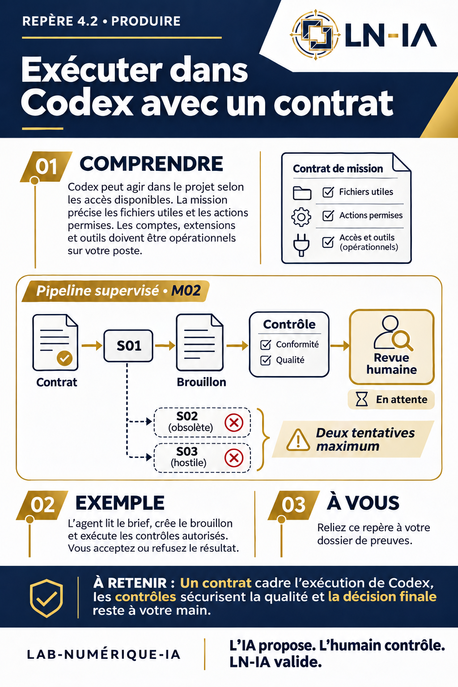
Lire le contenu pédagogique source
Codex peut agir dans le projet selon les accès disponibles. La mission précise les fichiers utiles et les actions permises. Les comptes, extensions et outils doivent être opérationnels sur votre poste. Exemple : L’agent lit le brief, crée le brouillon et exécute les contrôles autorisés. Vous acceptez ou refusez le résultat.
26 · Mesurer le travail complet
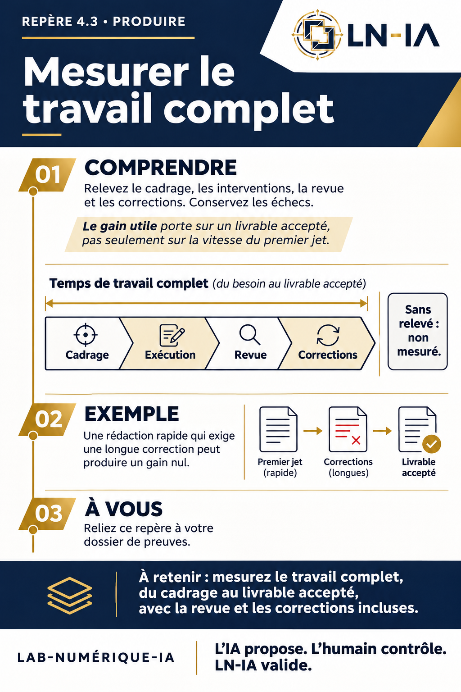
Lire le contenu pédagogique source
Relevez le cadrage, les interventions, la revue et les corrections. Conservez les échecs. Le gain utile porte sur un livrable accepté, pas seulement sur la vitesse du premier jet. Exemple : Une rédaction rapide qui exige une longue correction peut produire un gain nul.
27 · Capitaliser ce qui a été testé
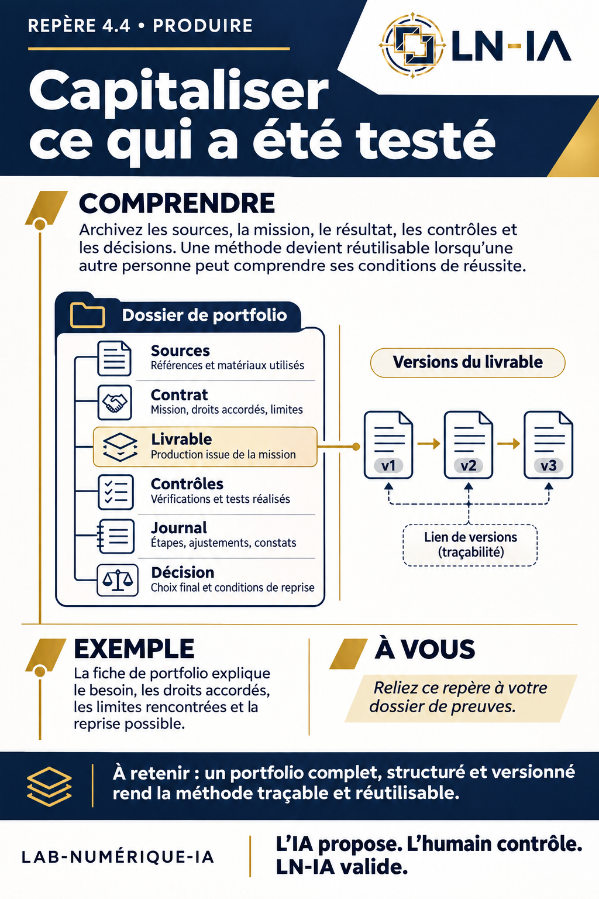
Lire le contenu pédagogique source
Archivez les sources, la mission, le résultat, les contrôles et les décisions. Une méthode devient réutilisable lorsqu’une autre personne peut comprendre ses conditions de réussite. Exemple : La fiche de portfolio explique le besoin, les droits accordés, les limites rencontrées et la reprise possible.
28 · Étendre après décision
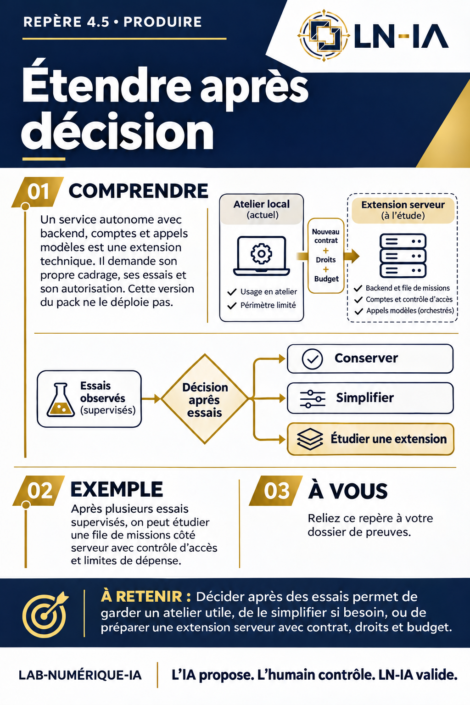
Lire le contenu pédagogique source
Un service autonome avec backend, comptes et appels modèles est une extension technique. Il demande son propre cadrage, ses essais et son autorisation. Cette version du pack ne le déploie pas. Exemple : Après plusieurs essais supervisés, on peut étudier une file de missions côté serveur avec contrôle d’accès et limites de dépense.
29 · Mission pratique · Produire un MVP vérifiable
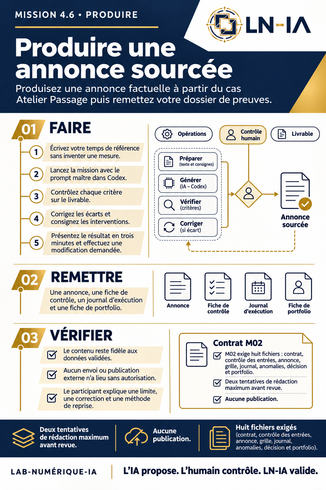
Lire le contenu pédagogique source
Produisez une annonce factuelle à partir du cas Atelier Passage puis remettez votre dossier de preuves. Faire : Écrivez votre temps de référence sans inventer une mesure. Lancez la mission avec le prompt maître dans Codex. Contrôlez chaque critère sur le livrable. Corrigez les écarts et consignez les interventions. Présentez le résultat en trois minutes et effectuez une modification demandée. Remettre : Une annonce, une fiche de contrôle, un journal d’exécution et une fiche de portfolio. Vérifier : Le contenu reste fidèle aux données validées. Aucun envoi ou publication externe n’a lieu sans autorisation. Le participant explique une limite, une correction et une méthode de reprise.
29 affiches PNG · Données pédagogiques fictives · Lecture locale sans installation ni connexion. Les textes intégrés aux images restent soumis à la revue. Un texte source accessible accompagne chaque affiche.